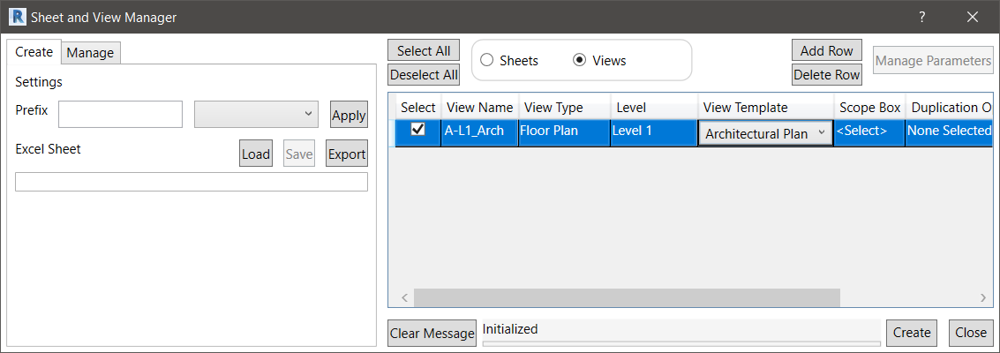
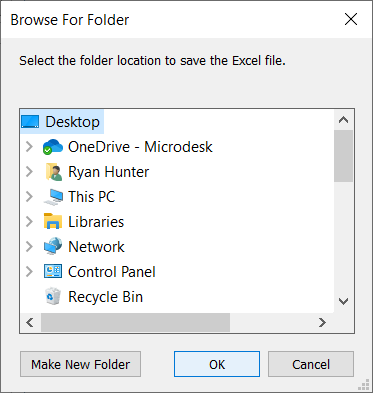
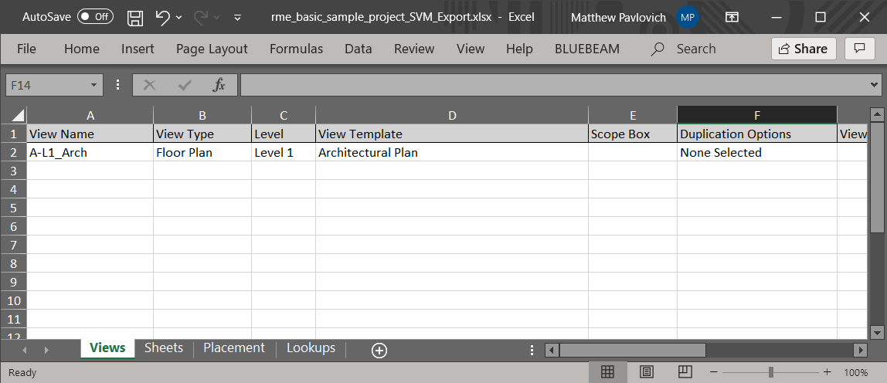
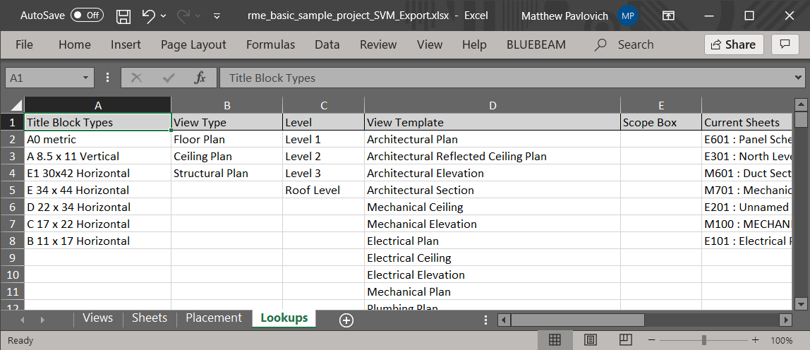
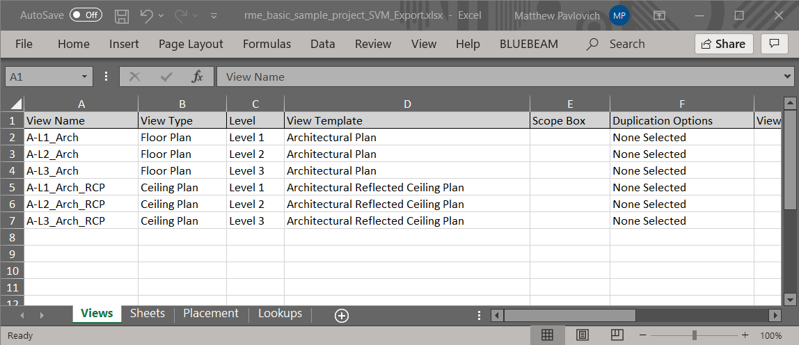

Create Views Using Excel
User has the ability to export the current Views columns and rows of data into an Excel sheet for continued editing.
In the Sheet and View Manager dialog:

- Under the Create tab, select the Export button.
- Select a location to save the Excel file:

- Click OK to accept the highlighted location.
- The Excel file will be saved using the following naming convention:
- <name of the project>_SVM_Export.xlsx.
- Navigate to the location the Export was saved and open the Excel file:

The Excel file will populate each tab with the data from the Sheets, Views, and Placement sections in the Sheet and View Manager dialog.
The Excel file will also fill out a Lookups tab to assist in the modification of the Excel file:

The data that is in the Lookups tab are specific to the project and can be accessed through drop-downs in the other tabs.
- Make any necessary changes or additions to the Excel.
Notes:
- Only correctly formatted xlsx data will be able to be imported back into the Sheet and View Manager.
- The Excel tab must be named ‘Views’ for its data to be referenced. If there is no tab named Views, the data will not be pulled for the Views data table.
- Example of xlsx data that is imported based on format:

Created with the Personal Edition of HelpNDoc: Full-featured Kindle eBooks generator